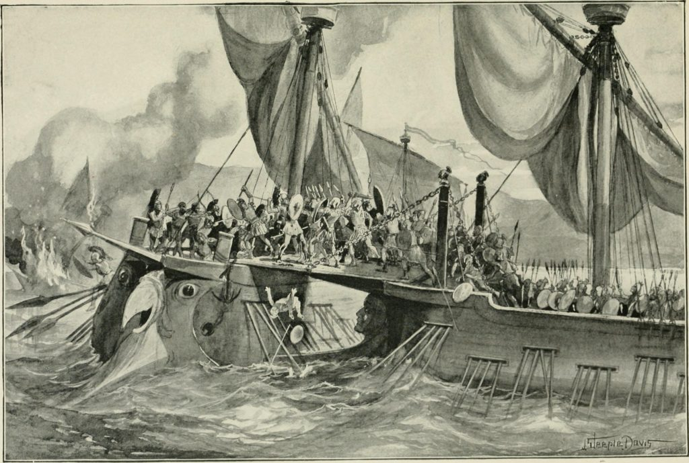
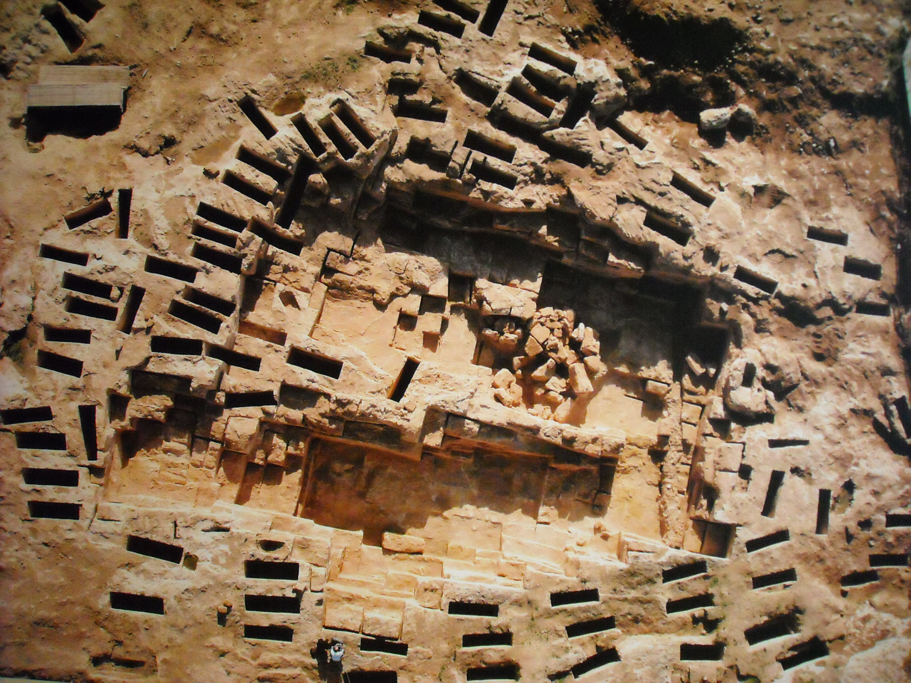
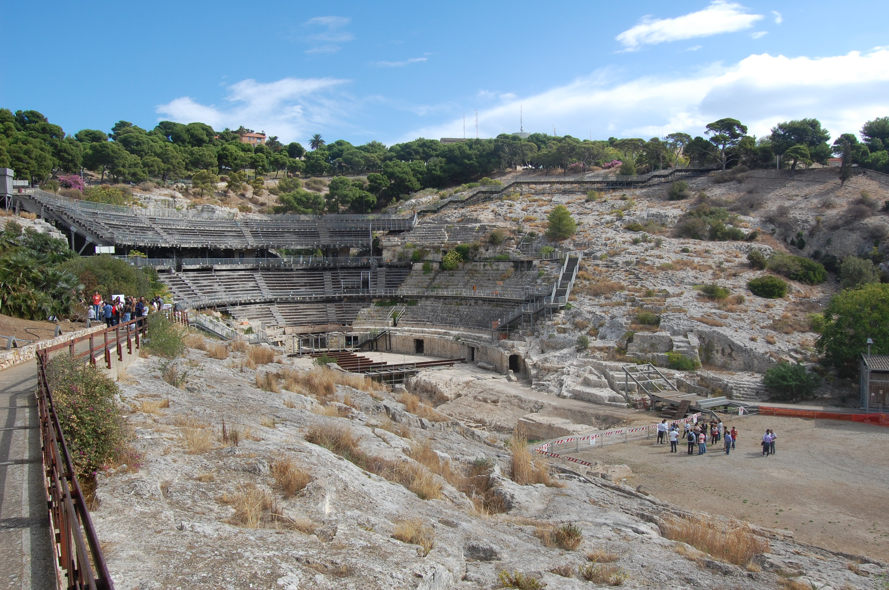
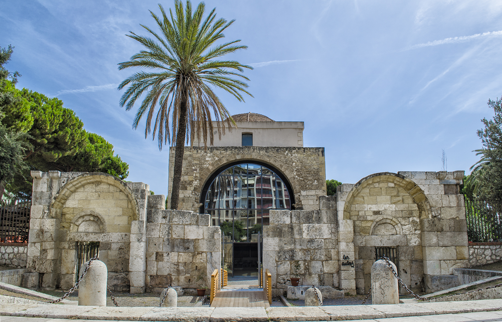
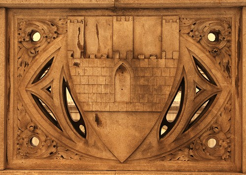
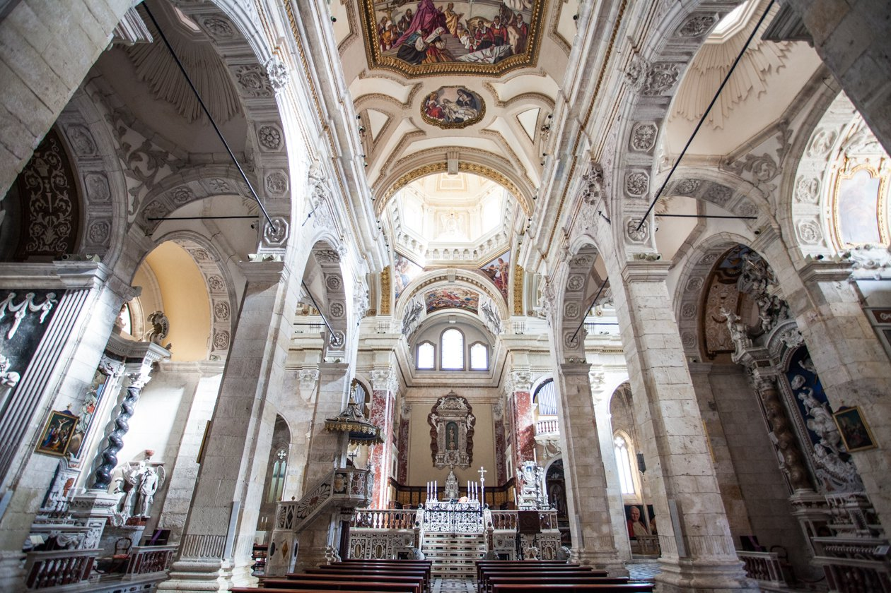

History of the city of Cagliari

8th-7th century BC: Phoenicians origins
Cagliari's history dates back to the Phoenician presence in the Mediterranean. Around the 8th century BC, Phoenician settlers from the city of Tyre established a settlement in the area. Its location was particularly strategic because of its natural harbour and position along important maritime trade routes. This settlement became the starting point for the development of the ancient city of Caralis.

5th century BC: The Carthaginian Period
During the 5th century BC, Cagliari came under Carthaginian control and became an important commercial centre. Its harbour played a fundamental role in trade across the western Mediterranean. The city expanded, and its economic importance increased thanks to its connections with other Punic settlements. The large Punic necropolis of Tuvixeddu is one of the most important archaeological testimonies of this period.

238 BC: The Roman Conquest
In 238 BC, Cagliari came under Roman control, together with the rest of Sardinia. Under Roman rule, the city developed into an important administrative and military centre. In 46 BC, Julius Caesar granted it the status of a Roman municipality. Several important buildings were constructed, including temples, defensive walls and the Roman Amphitheatre, whose remains can still be visited today.

5th–13th centuries AD: From Byzantine Rule to the Giudicato of Cagliari
After the fall of the Western Roman Empire, Cagliari passed under Vandal control and later became part of the Byzantine Empire. During the early Middle Ages, repeated attacks and political changes affected the city and its population. Sardinia gradually became divided into four independent territories known as the Giudicati, and Cagliari became the centre of one of them. The capital of the Giudicato was Santa Igia, an important settlement near the Santa Gilla lagoon.

1216–1258: The Pisan Period
During the 13th century, Pisa gradually increased its influence over southern Sardinia. Around 1216, the Pisans established Castel di Castro on the hill that is now known as the Castello district. They built strong defensive walls, towers and fortifications to protect the settlement and control commercial activities. In 1258, the Giudicato of Cagliari came to an end following the defeat of its rulers by an alliance involving Pisa and other Sardinian powers.

1324–1326: The Aragonese Conquest
In the early 14th century, the Crown of Aragon began its campaign to conquer Sardinia. In 1324, the Aragonese defeated the Pisans in a decisive battle near Cagliari. The conquest of the city was completed in 1326, when the Pisans finally left Castel di Castro. Under Aragonese rule, Cagliari became an important political and administrative centre, and Catalan and Spanish cultural influences gradually became part of its identity.

1718:The Beginning of Savoy Rule
After centuries of Spanish influence and a brief period of Austrian rule, Sardinia passed to the House of Savoy in 1718. Cagliari became the capital of the Kingdom of Sardinia and an important political centre for the new rulers. During the following decades, the city underwent several administrative and urban changes. Later, between 1799 and 1815, Cagliari also hosted the Savoy royal court, which had fled from Napoleon's advance in northern Italy.
1943: World War II and the Bombing of Cagliari
During World War II, Cagliari suffered devastating Allied air raids, particularly in February and May 1943. Large parts of the historic city centre were destroyed, and many buildings were severely damaged. Thousands of inhabitants were forced to leave their homes and seek refuge in other parts of Sardinia. The bombings deeply affected the city's population and architecture, leaving a lasting mark on its history.